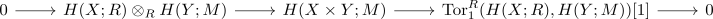

kunneth formula for singular homology
Proposition
Let $X$ and $Y$ be topological spaces, $R$ a hereditary ring and $M$ an \(R\)-module. Then there exists a natural short exact sequence

which also splits (albeit not naturally)
Proof
using
\begin{align*}
C^{\mathrm{sing}}(X \times Y) \otimes M \cong& C^{\mathrm{sing}}(X) \otimes C^{\mathrm{sing}}(Y) \otimes M \\
\cong& (C^{\mathrm{sing}}(X) \otimes R)) \otimes_R (C^{\mathrm{sing}}(Y) \otimes M)
\end{align*}
and by algebraic kunneth formula this follows